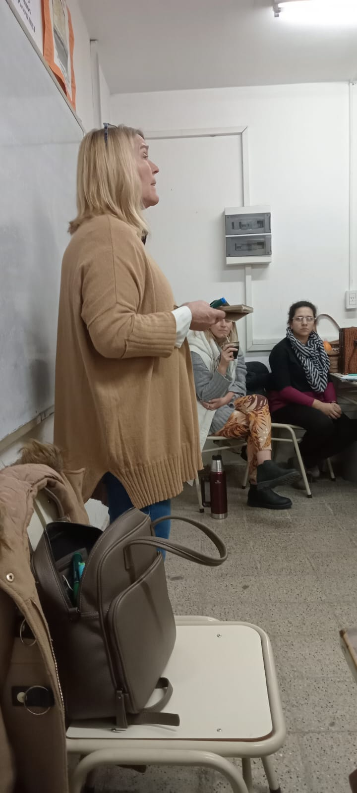
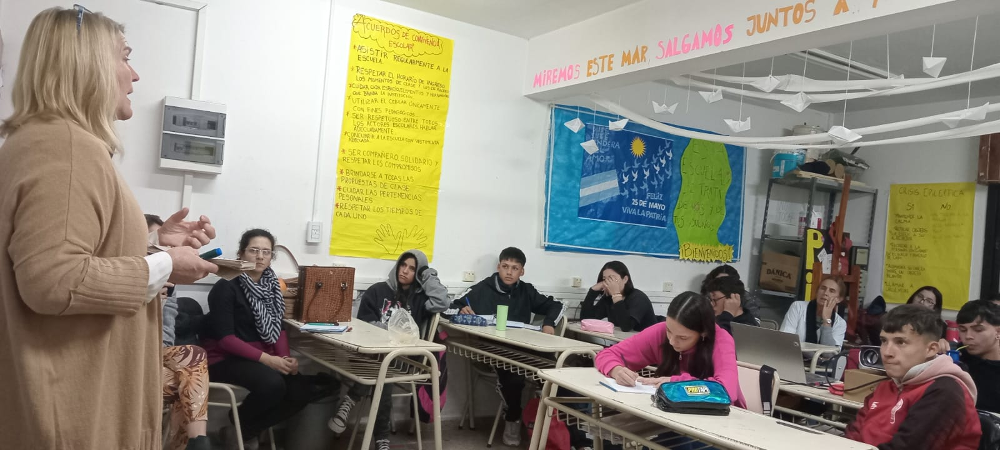

Nos Visitó Clara Raspo
Técnica en Ambiente y Desarrollo Sostenible
Clara Raspo nos visitó para hablar sobre la ordenanza que prohíbe el uso de bolsas de
polietileno en nuestra ciudad. Además, nos explicó detalladamente los materiales que la
municipalidad recicla y cómo estos se manejan dentro de un modelo de economía circular.
La charla también abordó temas de economía lineal y economía del reciclaje,
proporcionándonos una perspectiva gubernamental sobre la gestión de residuos y las
políticas ambientales. Nosotros aprovechamos la ocasión para interrogarla con el
cuestionario que habíamos preparado previamente, lo que permitió una interacción
dinámica y enriquecedora, nos felicitó por el proyecto y nos invitó a mostrar nuestro proyecto
en el día de la ciudad que es el próximo 8 de octubre como así también nos brindó su ayuda
para que podamos continuar con nuestro proyecto.


Antes de recibir la visita de Clara Raspo, elaboramos un cuestionario. Esta vez, nos enfocamos en la
ordenanza que prohíbe el uso de las bolsas de polietileno, como así también en los
diferentes tipos de materiales que la municipalidad recicla. La preparación de estos
interrogantes las hicimos a través de un debate que nos ayudó a estructurar el cuestionario de
forma objetiva y precisa. A continuación se detallan los mismos:
(1) ¿Qué sucede con los comercios que no acatan la ordenanza? ¿sigue vigente la ordenanza?
(2) ¿Hubo muchas clausuras de comercios?
(3) ¿Hubo realmente cambios y concientización?
(4) ¿Cómo controlan el cumplimiento de la ordenanza?
(5) ¿consideran suficiente el tiempo de campaña para el cumplimiento y concientización de la ordenanza?
(6) ¿Qué porcentaje de uso de bolsas r? ¿porque nace la ordenanza? ¿y para qué?
(7) ¿Cuándo se pone en marcha?
(8) ¿Fue fácil convencer al municipio sobre la importancia de la ordenanza?
(9) ¿Cuántos miembros formaron parte de la ordenanza? ¿Cuál fue tu influencia en la misma?¿Qué respuesta recibió la ordenanza por parte del ciudadano y el comerciante? ¿hubo resistencia?
(10) ¿hubo que realizar cambios en la ordenanza funcionan tal cual la presentaron? Usted, ¿Cree en el cambio de todos los ciudadanos sobre el uso de las bolsas?
Volver a la página principal